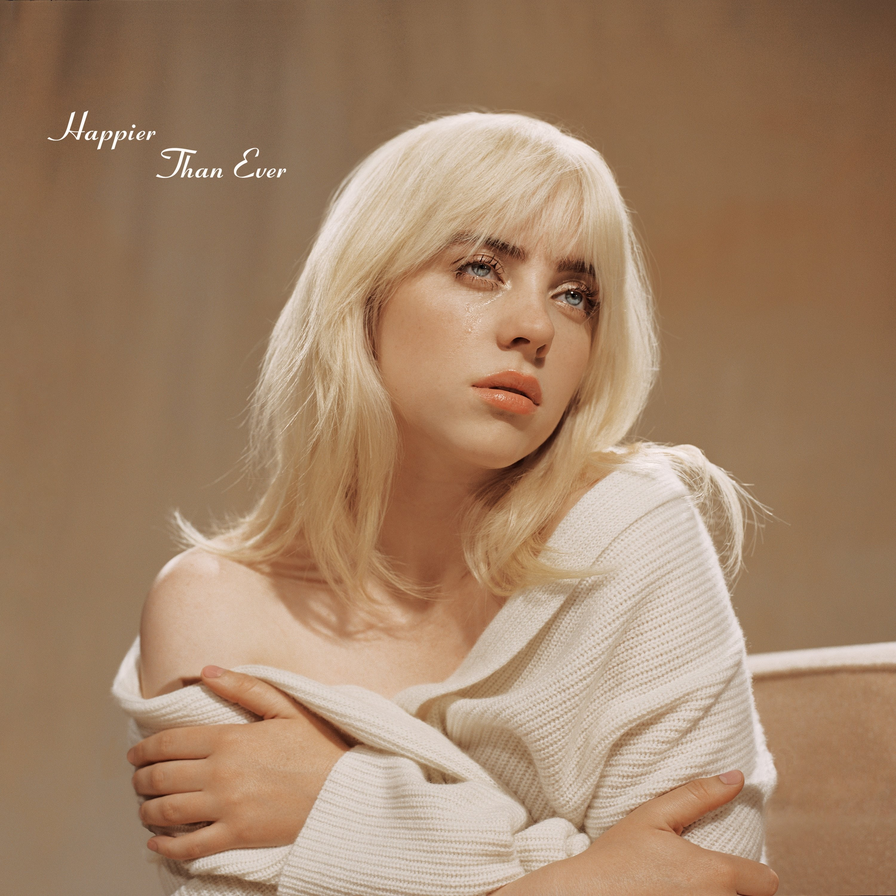

Billie Eilish
Data de nascimento: 18 Dezembro 2001 (idade 18)
Local de nascimento:Los Angeles, Los Angeles County, California, Estados Unidos
Billie Eilish Pirate Baird O'Connell (Los Angeles, 18 de dezembro de 2001), conhecida profissionalmente como
Billie Eilish, é uma cantora e compositora americana. Billie nasceu em 18 de dezembro de 2001 e foi criada em
Los Angeles com sua família de atores e músicos. Ela foi educada em casa junto com o irmão Finneas O'Connell
(Finneas é o parceiro e produtor das composições). Billie ingressou no Los Angeles Children's Chorus aos oito
anos, onde aperfeiçoou suas habilidades vocais. Aos onze anos, Billie começou a escrever e a cantar suas
próprias músicas, depois que Finneas já estava tocando suas próprias músicas com sua banda. Em 2015, os irmãos
lançaram duas músicas no SoundCloud, intitulado "She's Broken" (estilizado como "sHE'S brOKen", um jogo de
palavras que diz "Ela está quebrada, ele está bem") e "Fingers Crossed". "Não tivemos nenhuma intenção para
eles", disse Eilish mais tarde, dizendo que as músicas foram lançadas "para se divertir e para que nossos amigos
ouvissem". Em outubro de 2015, Finneas informou Billie de uma música que ele estava brincando com sua banda
intitulada "Ocean Eyes". Billie gravou a música e enviou para a sua professora de dança, que iria coreografar
uma dança para ela.
"Ocean Eyes", o single de estréia de Billie Eilish, foi lançado no SoundCloud em 2016 e se tornou um sucesso
viral. O vídeo da música foi lançado em 24 de março de 2016 e um vídeo de Eilish realizando uma dança para a
música foi lançado em 22 de novembro de 2016. Naquele ano, Eilish também lançou "Six Feet Under". "Ocean
Eyes" foi lançado em todo o mundo através do Darkroom e Interscope Records em 18 de novembro de 2016. Em 13
de janeiro de 2017, Eilish lançou um EP com quatro remixes de "Ocean Eyes".
Pós o sucesso dos remixes "Ocean Eyes", Eilish lançou o single "Bellyache" em 24 de fevereiro de 2017.
(Desde a sua versão, a música foi remixada pelo dúo Marian Hill.) "Bellyache" foi produzido e co-escrito por
Finneas O'Connell, com um vídeo musical dirigido por Miles e AJ sendo lançado em 22 de março de 2017 . Em 30
de março, Eilish lançou a trilha "Bored" como parte da trilha sonora da série de televisão 13 Reasons Why.
Em 30 de junho de 2017, Eilish lançou o single "Watch" com um single de seguimento, "Copycat" lançado em 11
de julho de 2017, juntamente com o anúncio de seu EP de estréia, dont smile at me. Toda sexta-feira de
julho, Eilish adicionaria outro single ao EP, foi assim que os singles "Idontwannabeyouanymore" e "My Boy"
foram lançados. Don't Smile at Me foi lançado em 11 de agosto de 2017.
musicas
midias sociais